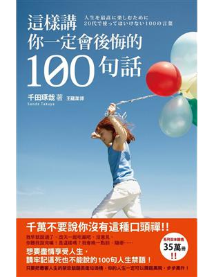

|  | 書名： 這樣講你一定會後悔的100句話 --- 簡介： 作者身為企業顧問，在過去十年和超過一千名二十多歲的上班族促膝深談。訪談中發現十年後大展鴻圖，和十年後潦倒失志的人有所差別。 --- 在工作或人生中該如何好好回覆呢？ --- 作者： 千田琢哉，東北大學教育學院教育系畢業，在日系保險公司總部、大型經營顧問公司工作後自我創業。在顧問公司期間，擔任各行各業大案子的負責人， 指揮從策略制定到實際執行的支援工作。曾經和三千三百位主管和超過一萬名商務人士對話。作者投入於寫作、演講、商業顧問等活動。同時還擔任多家股 票上市公司、商工會議所、TSUTAYA商業學校的進修講師，並擔任多家機構顧問。 |
|
美好句子❤️： ☑️公司不是學校。你不問，別人當然不會告訴你。 ☑️大器晚成的人，都是堅持不懈地努力到成功的那一天。 ☑️只要揮汗如雨地持續努力，在即將遺忘之際，oo就會出現。 ☑️一旦成為「有魅力的人」，就會像磁鐵一樣吸引其他「有魅力的人」。 ☑️努力當貴族，讓自己有能力說：「隨時都沒問題。」 ☑️不要再試圖掩飾缺點，只有接受缺點，才能發揮優點。 ☑️愈忙，愈要提前完成計畫。 ☑️不必預測別人的巔峰，把精力投入於提升自己的巔峰。 --- 📔📔 書中收錄了一百句該如何回覆的句子或是態度，對於剛從學校踏入職場生活的大家會有所不同的啟發，甚至很多事情是可以從在校就開始培養的，畢竟習 慣都是需要培養的，所以越早知道這些事情對我們越好。 |
|